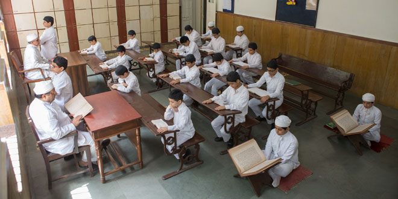
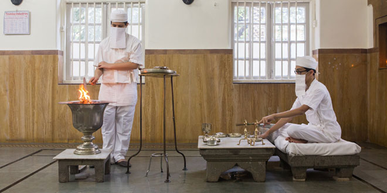
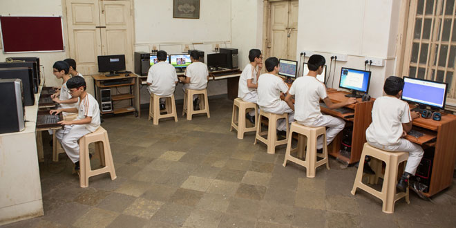
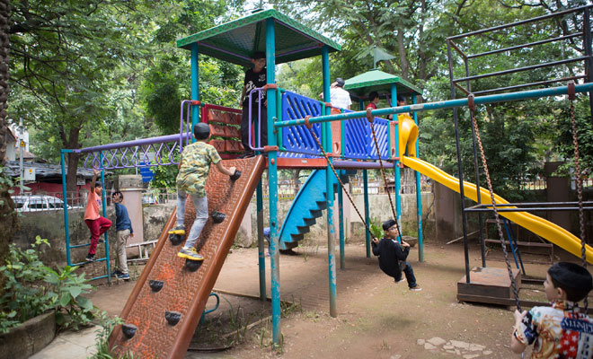
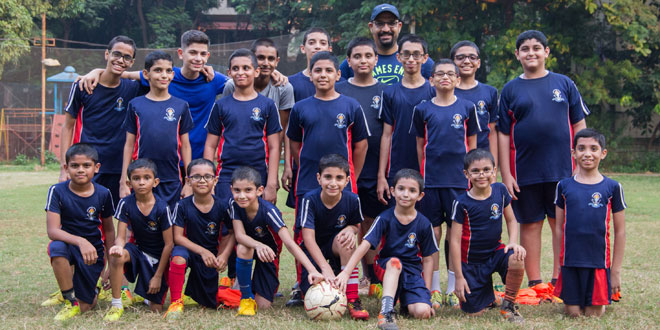
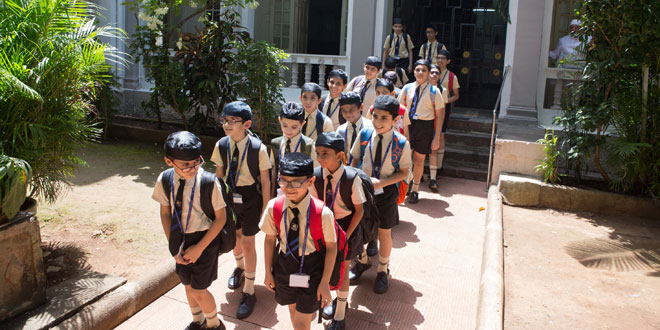

| |
Athornan Mandal was formed in 1915 by priestly and lay stalwarts such as Dastur Darab Peshotan Sanjana, Dastur Minocher Jamaspji Jamasp Asana, Mr. Jehangirji Vimadalal, Mr. Faredun Dadachanji, and Ervad Mahiyar Nowroji Kutar for the welfare of the priestly class and providing guidance to the Community in religious matters.
Athornan Mandal established the Dadar Athornan Institute (erstwhile Athornan Boarding Madressa) on 9th November, 1919 (Roj: Aneran Mah Ardibahesht 1289 YZ), as a public charitable Institution dedicated to the cause of providing religious as well as secular education to children of the priestly class and train them to be ideal priests who can guide the community. This Institute is a valuable asset to the Parsi community, as it not only keeps alive the traditions and life style of Parsi priests, but from time to time provides full fledged priests to the Community.
Dadar Athornan Institute provides scriptural, religious and ritual training to children of the priestly class along with secular education (upto S.S.C. level) at the Dadar Parsee Youths Assembly High School Dadar. Boarding, lodging, and allied facilities ie. medicines, books Educational Expenses and stationery are provided absolutely free of cost.
The Annexe building was built in 1990, which houses the Mancherji Joshi Hall, a Library, a Medicare centre and resident quarters for teachers.
This year the Institute is celebrating its centenary year. In its long history of 100 years, more than 500 students have studied at this august Institute. Some of its noteworthy alumni include
a) High Priests like Dasturji Dr. Hormazdyar K. Mirza, Dasturji Kaikobad P. Dastur and Dasturji Khurshed K. Dastur of Udwada, Dasturji Meherji K. Meherji Rana of Navsari and Dasturji Nadirshah P.Unwala of Bangalore.
b) Renowned religious scholars, teachers and educationists such as Er. Rustomji N. Panthaki, Er. Ratansha R. Motafram, Er. Dr. Parvez M. Bajan and Er. Dr. Ramiyar P. Karanjia.
c) Several Boywallas, Panthakis, and Yozdathregar Mobeds like Er. Asfandyar R.Dadachanji, Er. Adil J. Bhesania and Er. Burjor F. Aibada.
|
| |
Bhantar
- Scriptural study:
Dadar Athornan Institute was primarily founded for the purpose of providing an enlightened clergy for the Parsi community. A child, admitted between the age of 6 to 8 years, takes an average about seven years to learn complete prayers for Navar and Maratab.
|
| |
 |
|
 |
| |
Twenty years ago, Athornan Mandal - W.Z.O. Fund was launched to encourage young priests, especially alumni of the Athornan Institutes, to pursue full time priesthood.The scheme gives monthly stipends to young full time practicing priests from all over India. Presently around 65 young priests are reaping benefits from this scheme.
Education:
The Dadar Parsee Youths Assembly High School, Dadar, provides free academic education upto S.S.C level to Dadar Athornan Institute students since 1966. The Athornan Mandal is deeply grateful to the DPYA School authorities for this. The Dadar Athornan Institute has managed a 100% result at S.S.C. examination with many First class and distinctions.
On passing from the Dadar Athornan Institute, students practice priesthood, either part time or full time. Many students complete college graduation, while a few take up professional careers like Chartered Accountancy, Electronics and Computer Engineering. Some of them go on to become Professors, Teachers and Doctorates in Sciences and Arts. A few alumini have settled overseas in places like U.S.A., U.K., Dubai, Singapore, Australia and New Zealand, where too they offer their voluntary services as priests.
|
|
| |
Facilities
and Activities:
The Institute has a fully functional computer room with 12 computers catering to the students’ educational and recreational needs. Students are taken for educational and recreational outings including treks, hikes, camps and picnics. They also have sports activities like football and have weekly football coaching. |
 |
| |
The Institute has facilities for indoor games like table-tennis, carrom and chess as well as outdoor games like volley-ball, basket-ball and cricket. It has a junior recreation room as well as a children’s park in the campus with slides, swings, rock-climbing and monkey-gym.
|
| |
 |
| Students actively participate and win competitions at National, state, city, community, inter-school and inter-house levels in diverse fields. |
| |
 |
| |
Excellence in Mobedi:
In the past twenty years the Institute has given about 30 full fledged priests for the community, many of whom perform higher rituals like the Yasna, Visparad and Vendidad. Many have performed Nirang-Dins. |
| |
|
| |
Staff:
The Institute employs six resident and eight non-resident staff members, each being a specialist in their field. Every Student activity at the Institute is duly supervised by a teacher. Ex-students interested in pursuing college education are permitted to board, lodge and study at the Institute and assist the regular teaching staff.
Care of students:
Students are provided with rich and nutritious food daily, the menu for which has been prepared in consultation with a dietician. The Institute has the service of several honorary Doctors who monitor the general health of the students.
|
| |
 |
| |
| HOW
CAN YOU HELP THE INSTITUTE ? |
The Dadar Athornan Institute is a public charitable Institution funded by donations from philanthropic individuals and Trusts. The accounts are duly audited every year by a reputed firm of Accountants.
Today more than ever, with the regularly increasing rate of inflation, the Institute seeks your support and patronage by way of generous donations, which may be made to particular schemes or earmarked funds.
Sponsoring a student::
The Institute annually incurs an expenses of Rs. 2 lacs per student. A student can be sponsored for a year by a donation of Rs.200,000/- (Rupees Two lac), or by establishing an Endowment Fund of Rs.20,00,000/- (Rupees Twenty lac), from which a student can be maintained for his entire term of 10 years. If the sponsorship is in memory of a departed one, the student recites the name of the deceased in regular rituals and prayers. He also prays the Tandarosti of the donor and his/her family.
Part sponsorship of a student, is also possible, which covers just the education (and not the boarding and lodging). It can be done for a donation of Rs.20,000/- per annum.
Annual Baj-Rojgar
Ceremonies:
Afringan, Farokhshi, Baj and Stum (on fruits) are performed once a year by students for five years on the rojgar (death anniversary day) of a deceased person, for a donation of Rs.20,000/-
Sponsoring a Meal:
A donor can sponsor a meal for students. On festive occasions, students recite a Tandarosti. On death anniversaries a Stum (on fruits) is recited. The costs are Rs.2200 for a vegetarian meal, and Rs.3,500 for a non-vegetarian meal. Sweet-dishes (pudding, custard, jelly etc.) or ice-cream can be provided for an additional sum of Rs. 800 or Rs.1500 respectively. Annual bookings of meals can also be made. A donor can sponsor a breakfast or evening snack for Rs. 1000 or an outing for Rs.10,000. Owing to continuous inflation, the amount specified above may be revised from time to time.
Other earmarked Funds:
1) General Maintenance Fund: For any Institute related activity.
2) Food Fund
3) Milk Fund
4) Education Fund
5) Book Fund
6) Library Fund
7) Medical Fund: For students’ medical expenses
8) Mobed Amelioration Fund: For providing assistance to practicing and aged Mobeds.
9) Athornan Mandal-WZO Scheme: For giving monthly stipends and related benefits to young Mobeds.
Donations can be made either in cash or by Cheque, favouring Athornan Mandal, and sent to the addresses given below. Donors in India can remit Fund directly as follows:
|
| Account Name |
Athornan Mandal |
|
| Saving Bank A/c. No |
007200100000785 |
|
| Bank Name |
The Zoroastrian co-operative Bank Ltd, Dadar |
|
|
| Bank Address |
Parsi Colony, Dadar (East), Mumbai 400 014 |
|
|
| The Athornan Mandal is also authorized to receive donations from abroad. Our overseas donor can transfer funds directly to Athornan Mandal's FCRA Bank Account through NEFT/RTGS, details of which are as follows: |
| Account Name |
Athornan Mandal |
|
| Account Number |
1000691715 |
|
|
|
|
|
| ADDRESS |
FCRA Cell, 4th Floor, State Bank of India, New Delhi Main Branch, 11 Sansad Marg, New Delhi – 110001 |
|
| Telephone Number |
011-23374390/4392/4143 |
|
|
|
We appeal our generous donors who help us directly through wire transfer to please send their name, phone number and Pan card number (if the donation exceeds Rs.10,000/-) to info@dadarathornaninstitute.org and inform us about it at +912224138086. Our postal address is 651-52, Firdausi Road, Parsi Colony, Dadar (E), Mumbai 400014. India. |
| |
| For any further queries kindly contact: |
| The
Principal, |
The
Joint Honorary Secretaries, |
Dadar Athornan Institute,
651-52, Firdausi Road,
Mancherji Joshi Parsi Colony,
Dadar, Mumbai 400 014. INDIA.
|
Athornan Mandal,
240, Navsari Bldg., 2nd
Flr.,
Dr. Dadabhai Navroji Road,
Fort, Mumbai 400 001. INDIA. |
Telephone: +91-22-24138086
.
Email: info@dadarathornaninstitute.org |
Telephone:
+91-22-2207 0784.
Email: athornanmandal@yahoo.com |
|
In 2019, the Institute will complete 100 years of service to the Community. As long as the work of the Institute is appreciated by the community, it will continue to light the lamps of devotion and learning in the hearts of young priests and inspire them to tend the holy fires Worldwide. We look forward to your generous patronage.
|
|